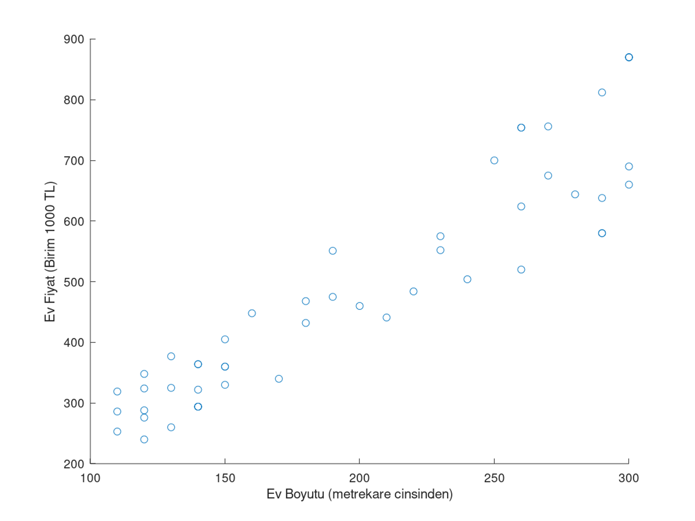

Yapay Zeka İnteraktif Sunum
Yapay Zeka İnteraktif Sunum
data-background: #ff0000 - vertical
data-background: rgba(0, 0, 0, 0.2)
data-background: salmon
Lineer Problemlere Giriş


Piko:Değerinden fazla para ödememek adına aklındaki ev boyutu için ideal bir fiyat belirlemek önemlidir. Bunu sana sağladığım grafiklerle nasıl hesaplarız inceleyelim. Öncelikle lütfen yandaki ev fiyatları/m2 grafiğini incele.